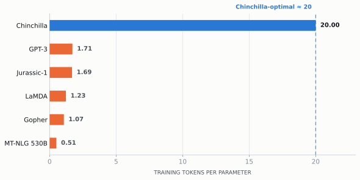
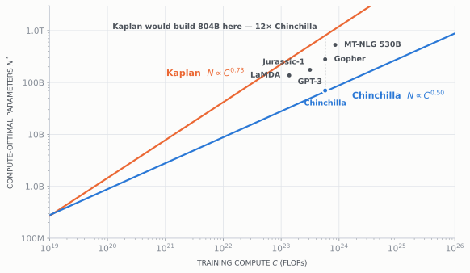
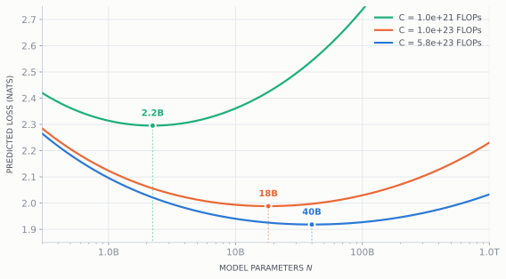
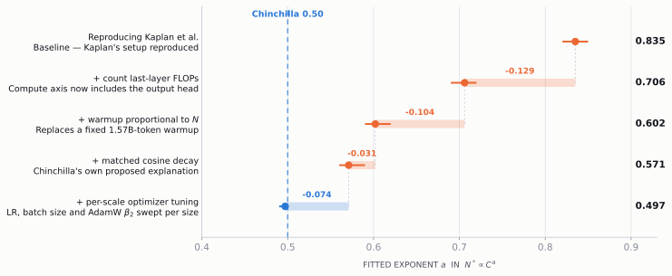

Scaling Laws for LLMs: Kaplan vs. Chinchilla
Two answers to the same question, and why the 0.23 gap between them turned out to be a bug
LLM
Scaling Laws
Research
Reproducibility
A practitioner’s walkthrough of the two scaling laws that shaped LLM pre-training, why their compute-allocation exponents disagreed, what the 2024 replications found, and what to actually do with any of it. Every figure is computed from published constants.
Between 2020 and 2022 essentially every frontier lab trained models on roughly 300 billion tokens and competed on parameter count. That was not laziness. It was the direct, correct reading of the scaling law everyone had: if the optimal model size grows like \(C^{0.73}\) and the optimal token count only like \(C^{0.27}\), then a 10× compute increase buys you 5.4× the parameters and only 1.9× the data. Parameters are where the returns are.
Chinchilla showed that the data axis had been starved. Here is what the 2020–2022 generation actually looked like, in the one ratio that matters.
What each paper actually fit
The two papers are not two measurements of the same quantity. They fit different equations to different data, and the difference in form matters as much as the difference in exponent.
Kaplan et al. 2020 — Eq. 1.1–1.3
\[ L(N) = \left(\tfrac{N_c}{N}\right)^{\alpha_N}\!,\quad L(D) = \left(\tfrac{D_c}{D}\right)^{\alpha_D}\!,\quad L(C_{\min}) = \left(\tfrac{C_c}{C_{\min}}\right)^{\alpha_C} \]
\(\alpha_N = 0.076,\ N_c = 8.8\!\times\!10^{13}\) \(\alpha_D = 0.095,\ D_c = 5.4\!\times\!10^{13}\) \(\alpha_C = 0.050,\ C_c = 3.1\!\times\!10^{8}\) PF-days
Pure power laws, no offset. Loss goes to zero as \(N \to \infty\). \(N\) counts non-embedding parameters — “excluding all vocabulary and positional embeddings.” Models spanned 768 to 1.5B non-embedding params; data 22M to 23B tokens.
Hoffmann et al. 2022 — Eq. 2 / Eq. 10
\[ L(N, D) = E + \frac{A}{N^{\alpha}} + \frac{B}{D^{\beta}} \]
\(E = 1.6934,\ A = 406.4,\ B = 410.7\) \(\alpha = 0.3392,\ \beta = 0.2849\) \(a = \beta/(\alpha{+}\beta) = 0.46\)
An irreducible-loss term. \(E\) is the entropy of natural text you can never fit away. \(N\) is total parameters, embeddings included. Models ran up to 16B params, budgets \(6\!\times\!10^{18} \to 3\!\times\!10^{21}\) FLOPs.
Three structural differences are doing real work here, and it is worth naming them before the exponents:
- The offset term. Kaplan’s form has no \(E\). Without an irreducible floor, a power-law fit has to bend the exponents to accommodate the flattening it sees at scale.
- Embedding parameters. Kaplan excludes them, Chinchilla includes them. At 768 non-embedding parameters with a 50,257-token vocabulary, the embedding matrix is the model. This is not a rounding difference.
- What “compute” counts. Both use \(C \approx 6ND\), but Kaplan’s \(N\) excludes the output layer, so the FLOPs of the final projection go uncounted — an under-approximation that Porian et al. measure at “roughly 10% at larger models to roughly 90% at smaller models.”
Put the two allocation rules on the same axes and the practical consequence is immediate.
The two allocation laws, as published
def kaplan_N(C):
"""Kaplan's *adjusted* law, as quoted by Porian et al. (2024)."""
return 1.3e9 * (C / 8.64e19) ** 0.73
def chinchilla_N(C):
"""Chinchilla Approach 1, anchored on Hoffmann et al. Table 3
(67B parameters at the 5.76e23 FLOP Gopher budget)."""
return 6.7e10 * (C / GOPHER_BUDGET) ** 0.50
Three approaches, and one that doesn’t agree
Chinchilla’s credibility rests on measuring the same quantity three independent ways. Two agree tightly. The third — the one everybody quotes, because it is the one that gives you a closed-form equation — is the odd one out.
| Approach | \(a\) (\(N^* \propto C^a\)) | interval | \(b\) (\(D^* \propto C^b\)) | interval |
|---|---|---|---|---|
| 1. Minimum over training curves | 0.50 | (0.488, 0.502) | 0.50 | (0.501, 0.512) |
| 2. IsoFLOP profiles | 0.49 | (0.462, 0.534) | 0.51 | (0.483, 0.529) |
| 3. Parametric loss modelling | 0.46 | (0.454, 0.455) | 0.54 | (0.542, 0.543) |
| Kaplan et al. (2020) | 0.73 | — | 0.27 | — |
Approach 1 takes the minimum over training curves: train a fixed set of model sizes, vary the token count, and read off the envelope. Approach 2 runs IsoFLOP profiles — nine fixed FLOP budgets from \(6\times10^{18}\) to \(3\times10^{21}\), sweeping model size within each and finding the parabola’s minimum. Approach 3 fits the parametric loss and derives the frontier analytically.
Approach 3’s \(a = 0.46\) looks close enough to 0.5 to ignore. It is not. Because the exponent compounds, a 0.04 difference becomes a large difference in the recommended tokens-per-parameter ratio as budgets grow — and you can check this yourself from the paper’s own printed constants.
# Hoffmann et al. (2022), Eq. 10 constants. Printed as 0.34 / 0.28 in the body;
# the extra digits come from the arXiv TeX source, recovered by Besiroglu et al.
HOFFMANN = dict(E=1.6934, A=406.4, B=410.7, alpha=0.3392, beta=0.2849)
EPOCH = dict(E=1.8172, A=482.01, B=2085.43, alpha=0.3478, beta=0.3658)
def loss(N, D, E, A, B, alpha, beta):
"""Predicted cross-entropy for N parameters trained on D tokens."""
return E + A / N**alpha + B / D**beta
def frontier(C, E, A, B, alpha, beta):
"""Closed-form compute-optimal (N*, D*) for budget C. Hoffmann Eq. 4."""
a = beta / (alpha + beta)
b = alpha / (alpha + beta)
G = (alpha * A / (beta * B)) ** (1 / (alpha + beta))
return G * (C / 6) ** a, (C / 6) ** b / G
N_star, D_star = frontier(GOPHER_BUDGET, **HOFFMANN)
print(f"N* = {N_star/1e9:.1f}B D* = {D_star/1e12:.2f}T D/N = {D_star/N_star:.0f}")N* = 40.3B D* = 2.38T D/N = 59That 40.3B is a genuine check on the arithmetic: Hoffmann et al.’s Figure 4 caption reads “We project the optimal model size given the Gopher FLOP budget to be 40B parameters.” The constants reproduce the paper’s own figure.
But look at the ratio the same code prints. Approach 3 says 59 tokens per parameter at the Gopher budget — and the number keeps climbing with compute. Approach 1, on the same budget, says 67B parameters on 1.5T tokens: 22 tokens per parameter. The paper trained Chinchilla at 20. Its own headline model does not follow its own headline equation.
Swap the Epoch constants into the same function and the ratio stabilises where practitioners expect it:
rows = []
for C_budget in [1e22, 1e23, GOPHER_BUDGET, 1e25]:
nh, dh = frontier(C_budget, **HOFFMANN)
ne, de = frontier(C_budget, **EPOCH)
rows.append({
"Compute (FLOPs)": f"{C_budget:.1e}",
"Hoffmann A3 — N*": human(nh), "tok/param ": f"{dh/nh:.0f}",
"Epoch refit — N*": human(ne), "tok/param": f"{de/ne:.0f}",
})
pd.DataFrame(rows)| Compute (FLOPs) | Hoffmann A3 — N* | tok/param | Epoch refit — N* | tok/param | |
|---|---|---|---|---|---|
| 0 | 1.0e+22 | 6.3B | 42 | 9.0B | 20 |
| 1 | 1.0e+23 | 18B | 51 | 29B | 19 |
| 2 | 5.8e+23 | 40B | 59 | 72B | 18 |
| 3 | 1.0e+25 | 148B | 76 | 312B | 17 |
The Epoch refit is flat near 20 across four orders of magnitude. That flatness is what makes “20 tokens per parameter” a usable rule of thumb rather than a coincidence at one budget — and it is worth knowing that the rule comes from Approaches 1 and 2 and the replication, not from the equation most people copy.

Where 0.73 actually came from
Chinchilla’s own explanation for the discrepancy was the learning-rate schedule: Kaplan used one cosine decay sized for 130B tokens across all runs, so a model evaluated at an intermediate checkpoint looks worse than a model whose schedule was sized to stop there. That biases short runs downward and pushes the fit toward bigger models on less data.
It is a good hypothesis. It is also mostly wrong, and we know this because Porian et al. ran over 900 training runs — 16 model sizes from 5M to 901M parameters on OpenWebText2 and RefinedWeb — reproducing Kaplan’s setup and then removing one confounder at a time.

1. Count the output layer’s FLOPs — −0.13
Kaplan excluded embeddings from \(N\), and because the output head shared weights with the input embedding, its per-token FLOPs got discounted too. The resulting under-approximation of compute runs from “roughly 10% at larger models to roughly 90% at smaller models” — a bias that scales with the very axis you are fitting against. Counting it correctly moves \(a\) from 0.835 to 0.706.
Pearce & Song attack the same issue analytically and reach a compatible conclusion: model total parameters as \(N_T = N_E + \omega N_E^{1/3}\) (fitting \(\omega = 47{,}491\) to Chinchilla’s own configurations) and the non-embedding relationship stops being a power law at all. It has a small-scale regime and a large-scale regime, with the crossover where embeddings are half the model — around \(10^7\) non-embedding parameters. Kaplan’s entire sweep, 768 to 1.5B, straddles that. Simulating Kaplan-scale models from the Chinchilla loss surface and fitting the way Kaplan did, they recover \(N^*_E \propto C_E^{0.74\text{–}0.78}\). The 0.73 falls out of the measurement convention. (Pearce and Song 2024)
2. Stop warming up for 1.57B tokens — −0.10
This is the subtle one. Kaplan used a fixed 3,000-step warmup at a \(2^{19}\)-token batch — about 1.57 billion warmup tokens, identical for every model. For a small model at a small budget, the compute-optimal token count is at or below the warmup length. Those runs never leave warmup, so they look terrible, so small models look worse than they are, so the fit tilts toward large models. Setting warmup tokens proportional to \(N\) moves \(a\) to 0.602.
3. Tune the optimizer per scale — −0.07
Sweeping learning rate, batch size and AdamW’s \(\beta_2\) per model size — they fit \(\mathrm{BS} = 0.00037\,N^{0.703}\) and \(\mathrm{LR} = 3.7\,N^{-0.36}\), and find \(\beta_2 = 0.95\) is actively bad at small batch sizes — lands at \(a = 0.497\), 95% CI (0.49, 0.50). Their summary: the exponent matches 0.5 “to within 0.6%” and the predicted model size at Chinchilla compute lands “within 15% of Chinchilla’s size.”
So the field’s canonical story — “Kaplan got it wrong because of the learning rate schedule” — is itself wrong. The dominant factors are an accounting error in the compute axis and a warmup length that poisoned the small-model end of the fit.
What each law tells you to build
Four laws, one budget.
Show the allocation code
def allocate(C):
kN = kaplan_N(C); kD = C / (6 * kN)
cN = chinchilla_N(C); cD = C / (6 * cN)
hN, hD = frontier(C, **HOFFMANN)
eN, eD = frontier(C, **EPOCH)
return [("Kaplan 2020 (adjusted)", kN, kD),
("Chinchilla · Approach 1", cN, cD),
("Chinchilla · Approach 3", hN, hD),
("Epoch AI refit (2024)", eN, eD)]
BUDGETS = {"Chinchilla / Gopher": GOPHER_BUDGET, "1e24": 1e24, "Llama 3 405B": 3.8e25}
def ratio(r):
return f"{r:.2f}" if r < 1 else (f"{r:.1f}" if r < 10 else f"{r:,.0f}")
out = []
for name, C_budget in BUDGETS.items():
for law, n, d in allocate(C_budget):
out.append({"Budget": name, "Law": law, "N*": human(n),
"D*": human(d), "tok/param": ratio(d / n)})
pd.DataFrame(out).set_index(["Budget", "Law"])| N* | D* | tok/param | ||
|---|---|---|---|---|
| Budget | Law | |||
| Chinchilla / Gopher | Kaplan 2020 (adjusted) | 804B | 119B | 0.15 |
| Chinchilla · Approach 1 | 67B | 1.4T | 21 | |
| Chinchilla · Approach 3 | 40B | 2.4T | 59 | |
| Epoch AI refit (2024) | 72B | 1.3T | 18 | |
| 1e24 | Kaplan 2020 (adjusted) | 1.2T | 139B | 0.12 |
| Chinchilla · Approach 1 | 88B | 1.9T | 21 | |
| Chinchilla · Approach 3 | 52B | 3.2T | 62 | |
| Epoch AI refit (2024) | 96B | 1.7T | 18 | |
| Llama 3 405B | Kaplan 2020 (adjusted) | 17T | 370B | 0.02 |
| Chinchilla · Approach 1 | 544B | 12T | 21 | |
| Chinchilla · Approach 3 | 273B | 23T | 85 | |
| Epoch AI refit (2024) | 619B | 10T | 17 |
Chinchilla-optimal is not deployment-optimal
Here is the part that matters most for anyone shipping a model, and it is a limitation both papers share rather than a disagreement between them. Both optimise loss given a training budget. Neither includes a single inference FLOP. If you train once and serve billions of tokens, you are optimising the wrong objective.
Add inference to the objective
Sardana et al. invert the problem: fix a quality target, minimise total compute. Training costs \(6N\) per token, inference costs \(2N\) per token, so the objective becomes (Sardana et al. 2024)
\[ N^*,\, D^*_{\text{tr}} \;=\; \operatorname*{argmin}_{N,\, D_{\text{tr}} \;\mid\; L(N, D_{\text{tr}}) = \ell} \;\; 6N D_{\text{tr}} + 2N D_{\text{inf}} \]
where \(D_{\text{inf}}\) is total lifetime inference tokens, input plus output. With \(D_{\text{inf}} > 0\) there is no closed form; they solve it by root-finding. It is short enough to reproduce:
from scipy.optimize import brentq, minimize_scalar
# Sardana et al. Appendix A: Chinchilla's A, B, E with alpha/beta de-rounded.
SARDANA = dict(E=1.69, A=406.4, B=410.7, alpha=0.336, beta=0.283)
def tokens_for_loss(N, target, E, A, B, alpha, beta):
"""Tokens needed for N parameters to reach a given loss."""
residual = target - E - A / N**alpha
return np.inf if residual <= 0 else (B / residual) ** (1 / beta)
def total_flops(N, target, D_inf, p):
return 6 * N * tokens_for_loss(N, target, **p) + 2 * N * D_inf
def inference_aware(N_chinchilla, D_inf, p=SARDANA):
"""Cheapest (N, D) reaching the quality of a Chinchilla-optimal model
of size N_chinchilla, once D_inf inference tokens are paid for."""
budget = 10 ** brentq(lambda lc: frontier(10**lc, **p)[0] - N_chinchilla, 18, 30)
N0, D0 = frontier(budget, **p)
target = loss(N0, D0, **p)
floor = (p["A"] / (target - p["E"])) ** (1 / p["alpha"]) # N below this can't reach it
best = minimize_scalar(lambda x: total_flops(np.exp(x), target, D_inf, p),
bounds=(np.log(floor * 1.001), np.log(N_chinchilla)),
method="bounded")
N1 = np.exp(best.x)
saved = 1 - total_flops(N1, target, D_inf, p) / total_flops(N0, target, D_inf, p)
return N0, D0, N1, tokens_for_loss(N1, target, **p), saved
N0, D0, N1, D1, saved = inference_aware(30e9, D_inf=1e13)
print(f"Chinchilla-optimal : {N0/1e9:5.1f}B on {D0/1e12:.2f}T tokens")
print(f"Inference-aware : {N1/1e9:5.1f}B on {D1/1e12:.2f}T tokens "
f"({D1/D0:.2f}x the data)")
print(f"Total FLOPs saved : {saved:.0%}")Chinchilla-optimal : 30.0B on 1.56T tokens
Inference-aware : 13.6B on 4.43T tokens (2.84x the data)
Total FLOPs saved : 28%That reproduces the paper’s stated result exactly: a developer expecting a 30B-Chinchilla-quality model to see \(10^{13}\) inference tokens “can reduce their total FLOPs by 28% by training a 13.6B model on 2.84× the data.” In dollar terms, with realistic MFU asymmetry between training and autoregressive generation, the same quality target at 17.5B requests is reached ~58% cheaper by an 8.58B model trained on 12.1T tokens.
What if you run out of data?
Muennighoff et al. ran more than 400 models, 10M to 9B parameters, for up to 1,500 epochs, and their finding is unusually actionable: up to roughly 4 epochs of repeated data is nearly free — their 8.7B model at four epochs on 44B unique tokens ended “with only 0.5% higher validation loss than the single-epoch model.” Returns then decay fast, with the fitted half-life at \(R_D^* \approx 15\) repetitions, and runs at 44 epochs diverge outright. They model it by replacing \(D\) with effective data (Muennighoff et al. 2023)
\[ D' = U_D + U_D \, R_D^* \left(1 - e^{-R_D / R_D^*}\right) \]
which collapses to Chinchilla exactly when there is no repetition. Under data constraint they also find you should scale epochs faster than parameters — the opposite tilt to Chinchilla’s equal scaling.
What frontier labs actually did
It is worth being precise here, because the folk version is wrong. Meta’s Llama 3 paper reports IsoFLOPs experiments from \(6\times10^{18}\) to \(10^{22}\) FLOPs, extrapolating to a \(3.8\times10^{25}\) FLOP budget and suggesting “training a 402B parameter model on 16.55T tokens.” They trained 405B on 15.6T — approximately compute-optimal, not over-trained. The over-training was deliberate and confined to the small models: “we also train our smaller models for much longer than is compute-optimal… The resulting models perform better than compute-optimal models at the same inference budget.” (Llama Team, AI @ Meta 2024)
That is the field’s settled position. Chinchilla-optimal is the right target for the flagship, where training cost dominates; heavy over-training is the right target for the models you actually serve.
The practitioner’s checklist
- Never use Kaplan’s allocation exponents. 0.73/0.27 is a measurement artifact with a known, reproduced cause. The loss-vs-scale phenomenology — smooth power laws, predictable returns — survives intact.
- Use ~20 tokens/parameter as the training-optimal anchor, and know it comes from Approaches 1 and 2 plus the Epoch refit, not from Chinchilla’s published Eq. 10, which drifts to 59+ at frontier budgets.
- If you will serve the model, over-train it. Compute the inference-inclusive objective before sizing. At \(10^{12}\)–\(10^{13}\) lifetime tokens the optimum moves substantially smaller-and-longer.
- Fit your own law on your own data and stack. Every exponent here is entangled with tokenizer, data mix, optimizer tuning and architecture. Chinchilla’s own three approaches disagreed on their own data.
- Sweep hyperparameters per scale, and warm up proportionally to model size. Both papers’ discrepancies trace back to holding something fixed across scales that should not have been.
- Include the output layer in your FLOP accounting. The single largest term in the reconciliation was an accounting choice, not a scientific finding.
Sources
Figures Figure 1, Figure 2 and Figure 4 plot values printed in the cited papers. Figure 3 and every code output above are computed from published constants and are reproducible by rendering this document. Where a number is our arithmetic rather than a paper’s, the caption says so.
Besiroglu, Tamay, Ege Erdil, Matthew Barnett, and Josh You. 2024. “Chinchilla Scaling: A Replication Attempt.” arXiv Preprint arXiv:2404.10102. https://arxiv.org/abs/2404.10102.
Hoffmann, Jordan, Sebastian Borgeaud, Arthur Mensch, et al. 2022. “Training Compute-Optimal Large Language Models.” arXiv Preprint arXiv:2203.15556. https://arxiv.org/abs/2203.15556.
Kaplan, Jared, Sam McCandlish, Tom Henighan, et al. 2020. “Scaling Laws for Neural Language Models.” arXiv Preprint arXiv:2001.08361. https://arxiv.org/abs/2001.08361.
Llama Team, AI @ Meta. 2024. “The Llama 3 Herd of Models.” arXiv Preprint arXiv:2407.21783. https://arxiv.org/abs/2407.21783.
Muennighoff, Niklas, Alexander Rush, Boaz Barak, et al. 2023. “Scaling Data-Constrained Language Models.” Advances in Neural Information Processing Systems (NeurIPS). https://arxiv.org/abs/2305.16264.
Pearce, Tim, and Jinyeop Song. 2024. “Reconciling Kaplan and Chinchilla Scaling Laws.” arXiv Preprint arXiv:2406.12907. https://arxiv.org/abs/2406.12907.
Porian, Tomer, Mitchell Wortsman, Jenia Jitsev, Ludwig Schmidt, and Yair Carmon. 2024. “Resolving Discrepancies in Compute-Optimal Scaling of Language Models.” arXiv Preprint arXiv:2406.19146. https://arxiv.org/abs/2406.19146.
Sardana, Nikhil, Jacob Portes, Sasha Doubov, and Jonathan Frankle. 2024. “Beyond Chinchilla-Optimal: Accounting for Inference in Language Model Scaling Laws.” arXiv Preprint arXiv:2401.00448. https://arxiv.org/abs/2401.00448.